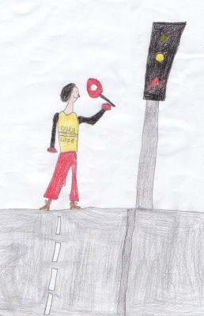

Unsere Niederraunauer Schülerlotsen

Kindern, die zu Fuß zur Schule kommen, helfen Schulwegbegleiter die Straße sicher zu überqueren.
Ansprechpartnerin:
account_circle
Charlotte Lachenmayer, Tel: 08282/829925
Die fleißigen Helferinnen und Helfer (alphabetisch):
account_circle
Fr. Bartenschlager
account_circle
Fr. Brühmüller
account_circle
Fr. Egger
account_circle
Hr. und Fr. Ehrhardt
account_circle
Fr. Fackler
account_circle
Fr. Hauf-Lemke
account_circle
Fr. Holdschick
account_circle
Fr. Jeutter
account_circle
Fr. König
account_circle
Hr. und Fr. König - Schmid
account_circle
Fr. C. Lachenmayer
account_circle
Fr. G. Lachenmayer
account_circle
Fr. Liedel
account_circle
Fr. Lorenz
account_circle
Fr. Lutz
account_circle
Fr. Mayer
account_circle
Fr. Miller
account_circle
Fr. Mussack
account_circle
Fr. Reichert-Niederhofer
account_circle
Fr. Rittler
account_circle
Fr. Scholz
account_circle
Fr. Schriever
account_circle
Hr. Siebert
account_circle
Fr. Spielvogel - Kraut
account_circle
Fr. Tschulik
account_circle
Hr. Tschulik
account_circle
Fr. Weiser
Weitere Mithilfe ist jederzeit herzlich willkommen!